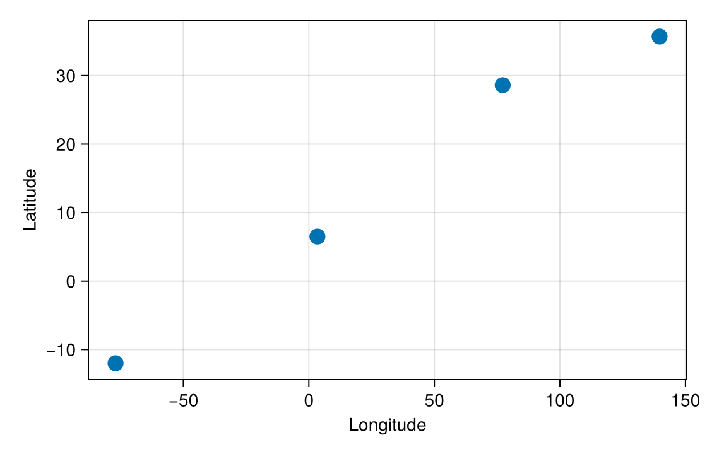

Selection
Clicking a mark selects it. The mark stays highlighted, and the @bind variable holds it until another click replaces it. You can also start with a mark selected, or keep a selection when the figure is rebuilt.
The examples on this page use a scatter of cities, with each city's name in its payload's city field:
cities = PointInteractable(ax, s; id = :cities, payloads = rows)
@bind pick masque(fig, cities)What replaces a selection
pick starts as nothing, and clicking a mark makes pick that mark's ElementEvent. Clicking another mark replaces it, because one widget holds one selection. Clicking empty space changes nothing: the highlight stays and pick keeps its value, so a stray click does not lose your choice.
To select several marks at once, drag a box over them instead: an ROIInteractable with selects returns every mark inside it, as Brush a region shows.
Start with a mark selected
To start with a mark selected, pass its position in the data you plotted as selected=. These are the same numbers pick.index gives, so selected = 1 is the first city:
@bind pick masque(fig, cities; selected = 1)The first city starts highlighted and pick starts as its event, so other cells have something to show before anyone clicks. Click another city to replace it:
Notebook as text
Tokyo starts selected, and clicking another city replaces the selection.
Plot the cities and attach each city's name as its payload.
begin
lon = [139.7, 77.2, 3.4, -77.0]
lat = [35.7, 28.6, 6.5, -12.0]
rows = [(city = "Tokyo",), (city = "Delhi",), (city = "Lagos",), (city = "Lima",)]
fig = Figure(size = (560, 360))
ax = Axis(fig[1, 1]; xlabel = "Longitude", ylabel = "Latitude")
s = scatter!(ax, lon, lat; markersize = 18)
cities = PointInteractable(ax, s; id = :cities, payloads = rows)
nothing
endselected = 1 starts the widget with the first city selected, so pick already holds its event.
@bind pick masque(fig, cities; selected = 1)
This cell shows the selected city from the start, and responds when you click another.
isnothing(pick) ? "click a city" : "$(pick.city) selected"Tokyo selectedWhen the widget has more than one layer you could select, name the layer: selected = (; cities = 1), or selected = Dict(:cities => [1, 3]) for several marks. In that case a bare number raises an ArgumentError, and so does a position outside your data.
selected = [1, 3] highlights both cities, but pick stays nothing until the next click, because a click holds one mark. With a selects box in the widget, pick starts as both events.
Points, bars, polygons, lines, and segments can start selected, but heatmap cells, axis readouts, boxes, thresholds, and the view cannot. A box or a threshold line starts where its bounds or value puts it, so to start one somewhere else, set those instead; see Read the box itself and Drag a threshold.
A RegionInteractable makes one layer per shape, so name those layers in selected=: :cells_c, :cells_r, and :cells_p for the id :cells. See Custom hits.
Keep a selection when the figure rebuilds
When the figure is rebuilt, for example because a slider changed the data, the widget starts over with nothing selected. A position in the old data can point at a different city in the new data, so Masque does not carry it over.
To keep a selection, keep what identifies the mark, such as the city's name, and look up its position after the rebuild. First, store the name in a cell that does not use pick:
last_city = Ref("Delhi")Update it from pick in another cell:
if !isnothing(pick)
last_city[] = pick.city
endThen look up the city in the rebuilt data and pass its position as selected=. Here city_names lists the cities in the order you plotted them:
start = findfirst(name -> name == last_city[], city_names)@bind pick masque(fig, cities; selected = start)If the city is no longer in the data, findfirst returns nothing and no city starts selected.
Passing the widget its own value, selected = pick, does not work: Pluto refuses the cell with a Cyclic references error. Between rebuilds you do not need it, because the widget keeps its highlight.
To select a mark from another widget's click, see Linked views.